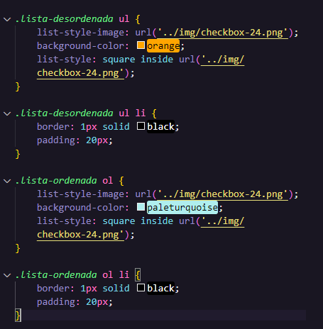

Como já vimos antes as listas tanto ordenadas quanto desordenadas já vem com uma pré estilização. No caso das listas desordenadas ela vem com as bolinhas na frente e no caso das listas ordenadas vem com números.
Podemos modificar isso seja tirando com "list-style: none;" ou colocando uma imagem em seu lugar. Na figura abaixo vemos como colocar uma imagem mais legal no lugar das nossas bolinhas ou números que vem na frente das nossas listas.

Para que nossa pequena imagem substitua as bolinhas ou números e fique dentre do espaço das listas usamos "list-style: square inside url('')". O "inside" que dizer 'dentro' por isso ele sempre estará presente para que tudo funcione e fique bonito na tela, se tirar isso não vai funcionar corretamente.